Simulador de la fila del banco
Caso académico BBVA. Operación, implementación, resultados reproducibles, límites de inferencia y defensa ante un jurado.
Modelo 2.1 · Auditoría del 21 de noviembre de 2026
Árbol de trabajo sobre ce23bf2375b0c405d0ebe63fa756168c9b4b7b87. La huella de cada fuente auditada figura en el anexo de pruebas.
Resumen
El simulador estima el comportamiento de una cola única con varias cajas y prioridad no expropiativa. Construye tiempos de llegada y servicio a partir de uniformes de Python, drena la fila al cierre de cada jornada y resume réplicas terminantes. La administración puede comparar escenarios y publicar estimaciones. El cliente elige una fecha y obtiene la espera media simulada por hora de llegada.
La compilación de Vue, 104 pruebas del repositorio, una traza independiente y un recorrido en navegador respaldan el funcionamiento en los casos probados. El estudio aporta 54 conteos de un día y carece de tiempos de atención observados y de datos de quincena. El escenario base da una salida media de la jornada de la mañana hacia las 19:21, posterior a la apertura independiente de la tarde. Se reprodujeron errores de división por cero y se comprobó que descartar corridas por KS modifica el conjunto con el que se calculan las esperas. La aplicación permite estudiar supuestos y comparar escenarios. La predicción de esperas reales por fecha requiere datos y validación adicional. Anexo de pruebas · Informe de hallazgos.
Clasificación de afirmaciones. IV = Implementado y verificado en el alcance indicado. INV = Implementado, pero no validado. DNI = Documentado, pero no implementado. SM = Supuesto del modelo. R = Recomendación. NV = No verificable con el material disponible. Los identificadores de prueba T y de hallazgo H vinculan afirmaciones, evidencia y límites. Matriz de cumplimiento.
1. Presentación, propósito y alcance
1.1 Problema y objetivos
El caso estudia una sucursal atribuida a BBVA en el levantamiento académico. La dirección de la sucursal y la fecha de recolección carecen de respaldo documental. El objetivo operativo del estudio es estimar espera, tiempo total, número de personas en fila y sistema, ocupación y hora de salida, por jornada y escenario. La administración puede modificar cajas y distribuciones, examinar la demanda y comparar configuraciones. El cliente consulta franjas de una fecha, con una recomendación basada en la menor media de espera modelada. IV para los dos recorridos informáticos y NV para la identificación exacta de la sucursal y la extrapolación real. Levantamiento §1.1 · T01, T12–T14.
1.2 Elección del enfoque
Una solución M/M/c estacionaria permitiría calcular, bajo tasa constante, servicio exponencial, disciplina FCFS sin prioridades y carga menor que uno, la probabilidad de esperar y la espera media mediante Erlang C. Es un punto de comparación útil con parámetros controlados. El caso base usa servicio uniforme, prioridad, inicio vacío, cierre y drenaje. Además, la carga ofrecida supera la capacidad nominal de cinco cajas. Estas condiciones hacen pertinente comparar trayectorias finitas por simulación. Un modelo fluido aproximaría el crecimiento de una cola sobrecargada con la diferencia entre tasas, con información limitada sobre la variabilidad. Una prueba de campo aportaría evidencia directa, pero tendría que replicarse por horario y día. La elección académica de simular aparece en el levantamiento. Esta comparación de métodos es una justificación técnica reconstruida. Decisiones, §21 · Coss Bú §§1.2–1.4, B1.
2. Flujo real y puntos de control
App.vue, api.py, iniciador.py y medidas.py.| Etapa | Entrada y operación | Salida y control |
|---|---|---|
| Recepción | Vue convierte listas y consulta Poisson y análisis temporal con retardos de 400/500 ms | Pydantic aplica reglas; conteos fuera de la jornada dan aviso en análisis. La simulación base promedia los conteos sin usar esa ubicación. T01, T10. |
| Parametrización | Promedio, proporción que va a caja, factor de demanda, cajas y distribución. Ecuaciones 7–9 | Diccionario de jornadas. Tasas por minuto para generar incrementos. T07. |
| Procesamiento de clientes | Ofrecer llegadas hasta el cierre; ordenar por generación; asignar cada servicio a la caja que antes se libera | Tabla de tiempos y ocupaciones. Una jornada vacía detiene la petición. T02–T03. |
| Aceptación | Ordenar los uniformes registrados de llegadas y servicios y calcular dos D. Ecuación 3 | Si alguna prueba se cruza con el umbral, descartar el intento. Límite agotado produce HTTP 409. T05–T06. |
| Resumen y verificación cruzada | Reconstruir eventos, áreas y promedios por réplica; Student, Poisson; Ciw opcional | JSON con resultados por jornada, primera traza y auditoría KS. T02, T07, T09. |
| Presentación | Vue transforma el JSON para ECharts y Three.js; formatea unidades y estados | Gráficas, tablas, veredicto y búsqueda de capacidad solicitada a otro endpoint. T13–T14. |
3. Manual de usuario
3.1 Abrir y preparar el entorno
Desde la raíz, docker compose up --build -d inicia el frente en http://localhost:8080 y la API en el puerto 8000. Sin Docker, instala dependencias con .venv/bin/pip install -r simulador2/requirements.txt, compila con cd front && npm install && npm run build y desde la raíz ejecuta .venv/bin/python simulador2/api.py. Abre http://localhost:8000. Para desarrollo, npm run dev reenvía la API al puerto 8000. Usa /docs para explorar la API y /openapi.json para su contrato. Para el recorrido verificado se usó la compilación de producción con un puerto local aislado. README del repositorio · T13–T15.
3.2 Paso 1. Llegadas
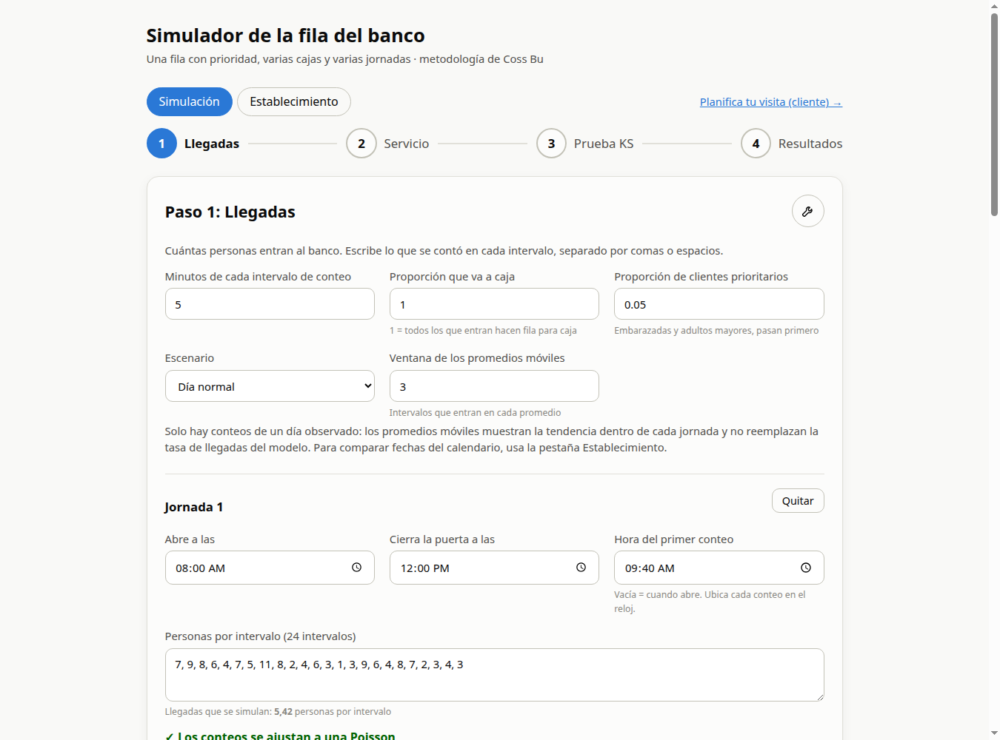
| Campo o acción | Valores y operación |
|---|---|
| Minutos por intervalo | 5 por defecto. Interfaz: ≥0,1 min. API: mayor que cero. Usa la duración real de todas las tomas. |
| Proporción que va a caja | 1 por defecto. Interfaz: 0,01 a 1. API: mayor que 0 y hasta 1 inclusive. Escala la tasa. |
| Proporción prioritaria | 0,05. Rango 0 a 1 en ambas capas. Es probabilidad por cliente; el extremo 1 falla al activar Ciw, H06. |
| Escenario y aumento | Día normal por defecto, factor 1. Día de quincena muestra factor editable 1 a 3 (paso 0,05), inicio 1,3. En el asistente el escenario es manual. El cambio actual en memoria se incorpora al publicar. |
| Ventana | 3 intervalos; enteros 2–24. Una ventana de 24 deja sin promedio las primeras 23 posiciones, aunque sus conteos siguen visibles. |
| Abre y cierra | 08:00–12:00 y 14:00–16:30. La salida puede ocurrir después del cierre de puerta. El formulario exige horas y la API exige orden ascendente. El editor de establecimiento aplica además reglas entre jornadas. |
| Hora del primer conteo | 09:40 y 14:00 por defecto. Si queda vacía, se usa apertura. El análisis verifica inicio y ajuste de todos los intervalos. El asistente base usa igual la media si los conteos son válidos y el inicio declarado está dentro de la jornada. |
| Personas por intervalo | Enteros no negativos, mínimo dos y al menos uno positivo. El lector admite coma, espacios, saltos y punto y coma. Se informa cantidad de intervalos y tasa simulada. Datos completos en el anexo. |
| + Agregar jornada / Quitar | Agrega 08:00–12:00 vacía, con servicio nuevo 1–10 min o media exponencial 5 min. Quitar aparece si hay dos o más. Siguiente verifica el formulario y los conteos. |
| Prueba Poisson y acordeón de tendencia | El resultado Poisson y la gráfica de frecuencias aparecen cuando responde el servidor. El acordeón empieza desplegado. Incluye las dos líneas móviles, categorías, tasas y homogeneidad. Faltas de cobertura o expectativas bajas generan mensajes en ese bloque. |

3.3 Paso 2. Servicio
Indica cajas abiertas (1–100 enteras, por defecto 5). La distribución se elige para todas las jornadas y sus parámetros se editan por jornada. Uniforme predeterminada 1–25 min, mínimo ≥0, máximo superior al mínimo. La UI exige al menos 0,1 min de separación y muestra la media. Exponencial permite editar la media, 13,5 min en la mañana y 14 en la tarde por defecto, con mínimo visible 0,1 min y regla de positividad en API. Pydantic comprueba los límites uniformes incluso si la opción activa es exponencial. Anterior vuelve a Llegadas y Siguiente entra a KS. PasoServicio.vue.
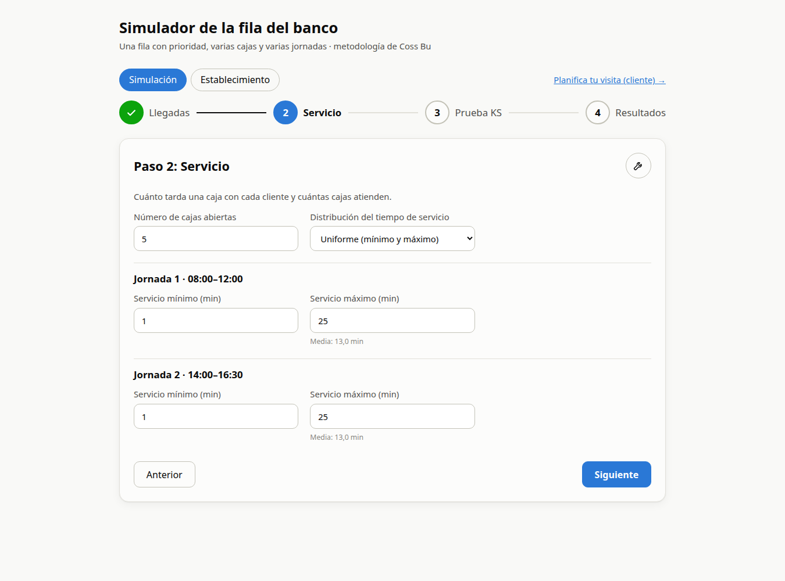
3.4 Paso 3. Prueba KS y reproducibilidad
Corridas de 2 a 500 (30), α 0,01 / 0,05 / 0,10 (0,05) y límite 1–100 (10). La API admite cualquier α estrictamente entre 0 y 1. Menor α exige discrepancia mayor para rechazar. Semilla manual: entero ≥0 en la interfaz; el servidor acepta también enteros negativos. Campo vacío: el servidor toma su reloj de época en ms. «Validar con Ciw» está desmarcado por defecto y ejecuta la comparación experimental de §18. Anterior permite editar el servicio y Simular ejecuta el caso. Los campos opcionales ocultos usan valores de fábrica; la semilla oculta viaja nula. PasoPruebaKS.vue · §7.
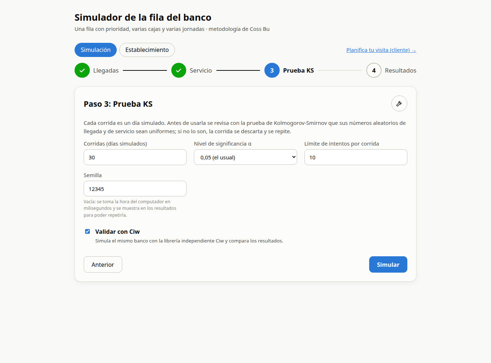
3.5 Paso 4. Resultados y navegación
La cabecera muestra semilla, modo y versión. Si la semilla difiere del campo de entrada, «Fijar esta semilla para repetir» la copia y hace visible el campo. El veredicto muestra por jornada Wq, IC 95 %, utilización, hora media de salida final y cierre de puerta. «¿Cuántas cajas…?» genera dos curvas y busca todas las jornadas por Wq ≤ meta. El rango de ocupación solo informa la evaluación, aunque el panel sugiere que ambas metas intervienen (H10). Las pestañas cambian de jornada y «Nueva simulación» vuelve al paso 1 con los campos de la sesión. La barra habilita los pasos ya alcanzados y el botón Anterior permite retroceder.
En «Detalle por jornada», inspecciona tasa de entrada, capacidad media de cada caja, banco 3D, gráficos, tabla con promedio/IC/mínimo/máximo, comparación Ciw si se solicitó, Poisson, distribución y acumuladas de longitudes y tabla cliente a cliente de la primera réplica. En 3D, desplaza o gira con los controles de órbita; en Tweakpane usa Reproducir, Velocidad (min/s, 0,5–60), Hora para desplazar el reloj, Girar cámara y Volver a empezar. El tablero muestra la hora, cuántos esperan, cuántos reciben atención y cuántos ya salieron de caja. La marca «afuera» cuenta el desborde de la representación a partir de 140 puestos de fila y la leyenda diferencia clientes, prioritarios y cajas ocupadas. En la parte inferior, despliega los D por corrida y los intentos descartados. Fichas de gráficas y tablas, §15.
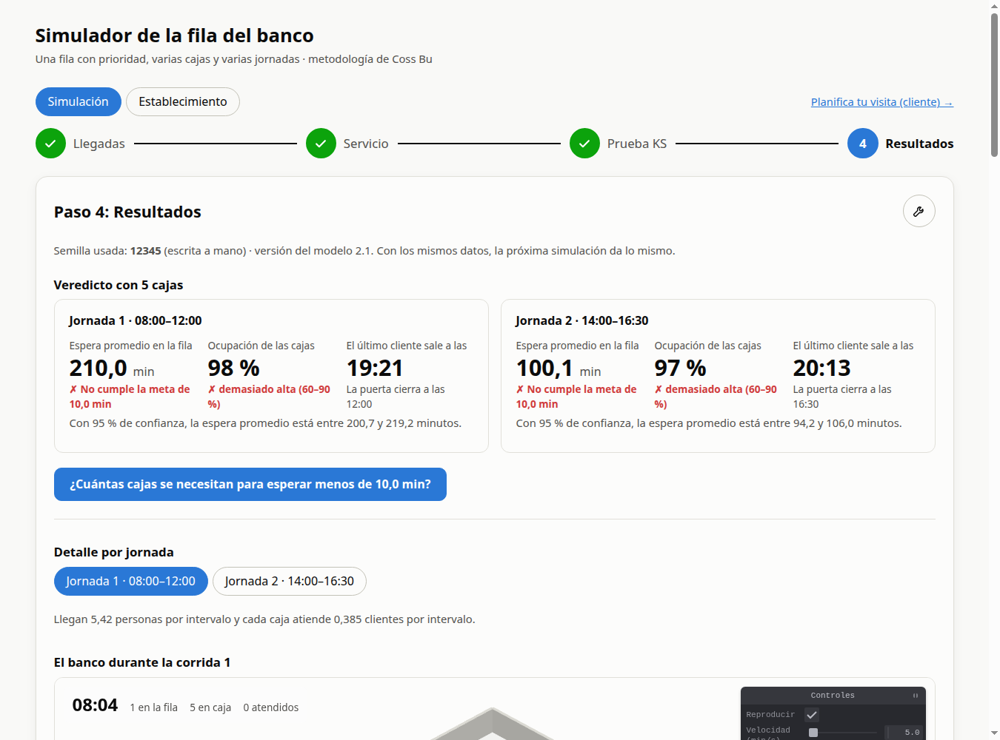
3.6 Ajustes locales y resolución de errores
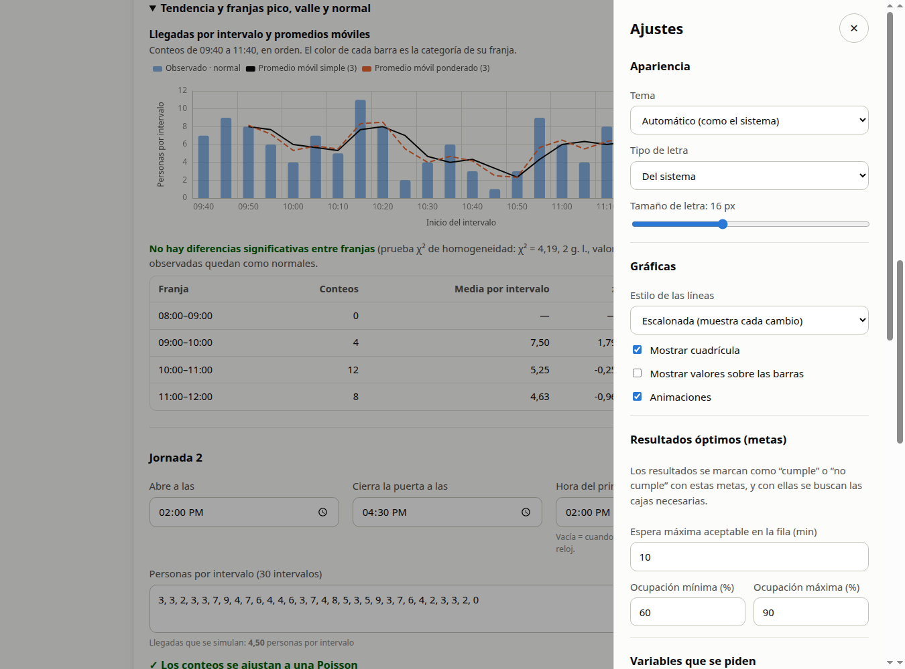
Apariencia: automático, claro u oscuro; fuente del sistema, Atkinson Hyperlegible, Inter, Serif o monoespaciada; 13–21 px (16). Gráficas: escalonada, recta o suavizada (escalonada), cuadrícula y animación activas, valores sobre barras desactivados. Metas: 10 min, ocupación 60–90 %. Se puede ocultar intervalo, proporciones, escenario, corridas, α, intentos, semilla y Ciw. Los interruptores de resultados controlan veredicto, banco 3D, gráficas, tabla de medidas, longitudes, KS, Poisson, Ciw y tabla de clientes. «Restaurar ajustes» restituye predeterminados locales y ventana móvil de tres. El servidor conserva por separado configuración y publicación. Estado y persistencia local.
Si falla la conexión, verifica que la API esté iniciada y que el frente apunte al proxy correcto. HTTP 422 identifica campos inválidos, fechas repetidas, horarios inválidos o jornada vacía, según la ruta. Si la API indica que una jornada quedó sin clientes, revisa conteos, duración y supuestos. HTTP 409 indica agotamiento de intentos KS y se conserva en el informe como problema metodológico de la política de descartes. Una gráfica oculta puede deberse a preferencias, datos insuficientes o una opción no solicitada. Un error 500 en los casos H05–H06 es un fallo reproducido, no una indicación de que deba cambiarse el dato real. Hallazgos.
3.7 Establecimiento, comparación y cliente
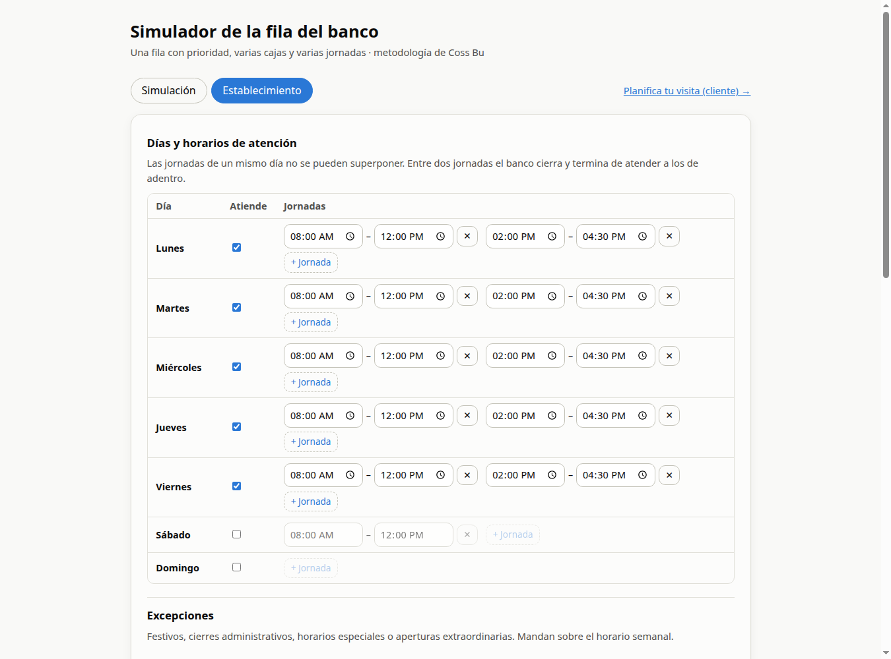
En «Establecimiento», marca abierto por día y usa «+ Jornada» o quitar para configurar intervalos. La semana inicial abre lunes a viernes en las dos jornadas del estudio; sábado cerrado con 08:00–12:00 preconfigurado; domingo cerrado. Agregar una excepción crea fecha de hoy, motivo «Festivo» y cierre. Edita fecha, tipo de apertura o cierre, jornadas si abre y motivo hasta 80 caracteres. Evita duplicar fechas, cruzar horas o definir jornadas contiguas. Une dos jornadas contiguas para modelar espera continua.
Zona horaria IANA (predeterminada America/Bogota), largos de franja 15/30/60/120 min (60), factor quincenal 1–3 (1,3) y tasa por jornada o por franja (por jornada). La API admite longitudes enteras 5–240, exige múltiplo del intervalo de conteo y valida al menos un día semanal abierto. «Guardar y publicar estimaciones» usa los valores actuales de los pasos 1–3. La vista previa muestra lo guardado, tiene flechas para mes anterior y siguiente y enlaza a cliente y fecha elegida. El estado informa vigencia, número de escenarios, corridas, semilla y versión. VistaEstablecimiento.vue.
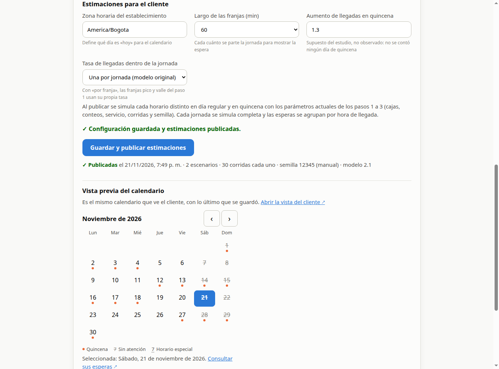
En «Comparar dos días» elige dos fechas distintas (campos A y B precargados con la próxima fecha cuyo día del mes es 5 y la próxima cuyo día del mes es 15), categoría Todas, Valle, Normal, Pico o Sin datos, y pulsa Comparar. Aparecen resúmenes de abiertos/cerrados o sin datos, número de intervalos simulados, valor medio por intervalo y series superpuestas en clases enteras comunes. La línea observada corresponde al mismo día de conteo del caso de estudio. Revisa el indicador de origen y las limitaciones de §15 antes de interpretar diferencias.
Como cliente, abre /#/visita o un vínculo /#/visita/2026-12-05. El calendario marca los días de quincena y los cierres, conserva la fecha en la dirección y obtiene «hoy» de la zona del establecimiento. Flechas cambian de mes y un día selecciona la consulta. El sábado 5 de diciembre de 2026 figura cerrado en el horario predeterminado del proyecto. «Ver el lunes, 7 de diciembre» enlaza al siguiente día abierto. El martes 15 se muestra como quincena. En un día abierto el listado indica horas, categoría, espera redondeada y bloque intermedio cerrado. «Recomendado» marca la media mínima; también puede informar franjas con estimaciones parecidas. Si no hay publicación aplicable muestra el horario y un mensaje; desde el pie se puede ir a administración. Algoritmo por fecha y capturas, §19.
4. Sistema conceptual
Entidad: persona que se modela como usuaria de caja. Recurso: cajero homogéneo disponible dentro de una jornada. Cola: pendientes admitidos que todavía no inician servicio. Servicio comienza al asignarse una caja libre y termina con la salida. El evento de llegada incrementa el sistema; si hay espera, incrementa cola. Inicio de servicio reduce cola; fin reduce sistema. El reloj es continuo en minutos, las transiciones ocurren en instantes discretos y duraciones y llegadas se generan estocásticamente. Disciplinas, horas de puerta y cantidad de cajas son deterministas dada la configuración. Cada réplica administrativa simula un día con jornadas separadas, cada una terminante; el periodo de drenaje deja de admitir entradas. Hay tasa constante por jornada en el modelo base y por tramos en el publicado opcional. La jornada total, con apertura y cierre, no es un proceso estacionario. IV para reglas del software y SM para su uso como representación del banco.
modelo/atender.El alcance excluye capacidad física finita, abandono, rechazo por congestión, citas, clientes repetidos, tiempos de trayecto y variación de personal dentro de la jornada. El estudio menciona categorías de prioridad (embarazadas y adultos mayores), pero el software simula una marca Bernoulli. Llegadas de externos y atención por otros canales se representan mediante una proporción que va a caja. Los empates se tratan en §12.
5. Procedencia, calidad y trazabilidad de los datos
La fuente local describe conteo directo desde afuera durante un solo día considerado regular. Registra personas que entran, en intervalos consecutivos de cinco minutos: 24 entre 09:40 y 11:40 y 30 entre 14:00 y 16:30. Suma 130 y 135 (265 entradas en 270 minutos observados). La mañana opera 240 minutos en el modelo y se observó durante 120. Faltan 08:00–09:40 y 11:40–12:00. La tarde está cubierta en el calendario de estudio; el cero de 16:25–16:30 es un valor tabulado. No se localizaron registros individuales, fecha, día de semana, sede, instrumento, responsable, procedimiento de control, motivo verificable de elegir cinco minutos, ni diseño de muestra. No es posible diagnosticar errores de registro, atributos de visitantes ni representatividad. Un 11 en la mañana y un cero en la tarde son extremos observados; sin evidencia externa se conservan. IV para serialización de las tablas y NV para los metadatos ausentes. Levantamiento §1.3 · Datos y verificación.
| Dato original | Fuente | Transformación y parámetro | Uso y alcance |
|---|---|---|---|
| 130 en 24 tomas y 135 en 30 | Tablas del levantamiento y arrays en api.py | 5,4167 y 4,50 personas / 5 min; varianzas 6,9493 y 5,0172 | λ por intervalo, diagnóstico Pearson y gráficos. IV para cálculos. |
| 09:40 y 14:00, conteos de 5 min | Levantamiento, configuración de inicioConteos | Reloj de cada celda; franjas; PMS y PMP | Clasificación, análisis y perfil publicado. IV. |
| Uniforme 1–25 min | Acuerdo del equipo, sin medición de servicio | Media 13 min, μ=5/13=0,3846 servicios/caja/intervalo | Motor y sensibilidad. SM. |
| Media de 13,5 o 14 min | Predeterminados del software para exponencial | Inversas 1/13,5 y 1/14 por minuto | Opción de servicio alternativa. SM. |
| Todos van a caja y 5 % prioritarios | Parámetros del estudio | Escala p=1, marca B∼Bernoulli(0,05) | Tasa admitida y turno preferente. SM. |
| 30 % adicional en quincena | Escenario del levantamiento, aplicación permite editarlo | g=1,3; misma familia y perfiles escalados | Comparación hipotética regular–quincena. SM. |
| 08–12, 14–16:30 y cinco cajas | Levantamiento; horario semanal y excepciones en Establecimiento | Horizontes 240 y 150 min y vector de cinco cajas | Operación modelada. El horario por fecha se configura; NV para horario oficial. |
El conteo externo puede incluir personas que nunca usan cajas. El supuesto de llegadas homogéneas proyecta la mañana a horas sin observar. Un único día no separa efecto de quincena, día semanal ni estacionalidad. Cierres especiales pueden ingresarse en calendario, pero para verificar su realidad se necesita un registro. Más réplicas computacionales reducen error Monte Carlo bajo los parámetros; no agregan días observados. Plan de validación, §18.
6. Días y franjas de demanda
El tipo de día se determina por fecha: 1–4, 12–18 incluidos y últimos cuatro días del mes son quincena, incluso si el establecimiento está cerrado. Regular es el complemento. La apertura se determina por la excepción exacta si existe; de otro modo por el horario del día de la semana. No hay catálogo automático de festivos. Cada franja se alinea con múltiplos del largo medidos desde medianoche, recortando primero o último tramo. Los conteos se asignan por su hora de inicio. sinDatos distingue franjas sin conteos, pero puede tener tasa supuesta en el pronóstico. IV para reglas; SM para el efecto de quincena y llenado de huecos. Calendario · Clasificación.
j indexa las k franjas con datos, nj es la cantidad de tomas y Sj su total de personas. x̄ agrupa la jornada en personas/toma. Los estadísticos son adimensionales y el contraste global evalúa igualdad de tasas con exposiciones iguales por toma. Solo si p < α se asignan pico cuando z > c y valle cuando z < −c. Los demás datos quedan normales. El denominador es el residuo Pearson sin ajustar por la estimación común; Bonferroni presupone contrastes marginales calibrados. Una esperanza menor de 5 genera advertencia y el código continúa el contraste, H08. Franjas normales y sin datos dentro del perfil toman, en el modo franja, el promedio de conteos normales o la media de jornada si no existen normales. Fuera de una jornada observada se usa la media general. Derivación y contraste alternativo.
Con franjas de 60 min y α=0,05, la mañana tiene 4, 12 y 8 tomas observadas por tramo, con sumas 30, 63 y 37. X²=4,1923, p=0,1229. La tarde tiene sumas 55, 66 y 14 en 12, 12 y 6 tomas: X²=8,9444, p=0,0114. Para 16:00–16:30, E=27, z=−13/√27=−2,502 y c=2,394, por lo que se etiqueta valle. No aparece un pico con los datos por defecto y ese corte. Categoría y tasa son resultados distintos: con modelo jornada, 16:00 puede mostrar valle y simular todavía 4,50 llegadas por toma regular. IV. T10.
7. Números pseudoaleatorios y semilla
Una fuente física produce resultados cuyo valor se origina en un proceso físico. Un generador pseudoaleatorio evoluciona un estado determinista a partir de una semilla y emite números que aproximan propiedades probabilísticas. Período es la longitud de un ciclo antes de repetir estado. Uniformidad describe la ley marginal; independencia exige que la ley conjunta factorice, condición que una muestra finita no puede demostrar universalmente. Coss Bú capítulo 2 estudia el congruencial mixto Xi+1=(aXi+c) mod m y el multiplicativo con c=0. En su ejemplo mixto, a=5, c=7, m=8, X0=4 da el residuo 3, U=3/8, y un ciclo de ocho estados. El simulador usa la instancia de módulo random de CPython 3.12.3, basada en MT19937, período 219937−1, con salida flotante de 53 bits en [0,1). Estado, transformación de bits y recombinación en el anexo. Anexo A.1 · B1, B3, B4.
_randommodule.c y iniciador.py. Véase §9.El navegador envía la semilla manual o null. resolverSemilla aplica time.time_ns() // 1_000_000 si recibe None; el reloj es del servidor, aun cuando UI y servidor estén en distintos equipos. El valor es un entero de época, con piso a milisegundos; dos solicitudes pueden repetirlo. Las marcas actuales caben en el rango entero seguro de JavaScript; la API permite enteros arbitrarios y a partir de 253 la UI no puede distinguir todos los enteros consecutivos (H14). CPython aplica valor absoluto a semillas enteras negativas; la ruta temporal usa enteros positivos. El caso administrativo llama a random.seed con entero y consume un flujo para llegadas, prioridades y servicios. Cada réplica continúa tras la anterior, incluidos los descartes. La publicación siembra desde una cadena semilla|tipo|horario: reproducible por escenario, con secuencias distintas en el uso normal, sin demostración de independencia de subflujos. Ciw comparte el estado de random después del motor propio en el camino medido. La búsqueda de cajas reinicia la semilla por cada c. T07, T11–T12.
Semilla 12345 en un random.Random nuevo: 0,4166198725; 0,0101691695; 0,8252065093; 0,2986398552; 0,3684116895; 0,1936613490; 0,5660081687; 0,1616878239; 0,1242668843; 0,4329362680. En el motor, el segundo uniforme determina prioridad del primer cliente. Se requieren la configuración, el orden de llamadas y versiones reproducibles además de la semilla. Valores completos, entorno y entrada · Reconstrucción de los bits.
8. Pruebas estadísticas y alcances
| Prueba | Hipótesis nula y estadístico | Qué detecta | Qué queda fuera y estado |
|---|---|---|---|
| Promedios §3.1 | E[U]=1/2, Z=(ū−1/2)√(12N) | Desplazamiento de media | Ley y dependencia; DNI. |
| Frecuencias §3.2 | Probabilidad 1/k en cada partición de U; Pearson | Desequilibrio por clases | Reordenamientos y estructura interna a la clase; DNI como prueba de U. |
| Distancia §3.3 | Huecos geométricos entre aciertos en una región predefinida; Pearson | Concentración o separación de visitas | Dependencia en otras regiones; DNI. |
| Series §3.4 | Probabilidad 1/k² por celda para pares de U; Pearson | Patrones consecutivos | Rezagos superiores y dependencia intraclase; DNI. |
| KS §3.5 | F=F0 continua conocida; sup |Fn−F0| | Discrepancia máxima acumulada | Dependencia serial. D verificado; calibración de las entradas del motor INV. |
| Póker §3.6 | Patrones de cinco dígitos con probabilidades combinatorias; Pearson | Repeticiones dentro de cada mano | Orden entre manos; DNI. |
| Corridas §3.7 | Longitudes de rachas según signos sobre un umbral o subidas/bajadas; Pearson en el libro | Orden excesivamente alternante o persistente | Otros patrones seriales; DNI. «Corridas» en la UI significa réplicas. |
La tabla no convierte los métodos teóricos en funcionalidades. El anexo deriva hipótesis, regla, ejemplos, supuestos y aplicación de cada uno. La autocorrelación a rezago h estima relación lineal entre pares separados h; rachas y series pueden revelar dependencias de otras formas. Un patrón alternante puede tener histograma uniforme. Anexo A.2, batería teórica.
Fn(x) es la proporción de uniformes ≤x, y F0(x)=x para 0≤x≤1. Los máximos consideran ambos lados de cada salto y carecen de unidades. La nula usual exige observaciones iid, distribución continua y parámetros especificados. El programa calcula D para dos listas de R de clientes admitidos y aprueba si ambos D son estrictamente menores que sus críticos. El coeficiente del código es cα=√[−ln(α/2)/2]. Para n≤35 divide por √n+0,12+0,11/√n; para n>35 por √n. La tabla impresa de Coss Bú p. 42, PDF 34, indica la fórmula aproximada para n>100 y ofrece valores tabulados más allá de 35. La aproximación pequeña está relacionada con la corrección de Stephens, no es la tabla del libro. En n=36 el programa devuelve 0,22635 frente al cuantil exacto 0,22119. En n=1 devuelve 1,10415 y D≤1 implica aprobación automática. La UI informa D, crítico y razón, no el valor p KS. T05–T06 · B1 §3.5, B5, B6.
La primera réplica regular guardada tiene n=404, D de llegadas 0,05085 y de servicios 0,04504 frente a 0,06757. El diagnóstico es de uniformidad marginal bajo los supuestos citados. Las llegadas originadas por un U grande que rebase el cierre o un borde de tramo quedan fuera de la muestra. El procedimiento también selecciona réplicas sobre D, lo que puede modificar Wq. H02 explica el mecanismo y T06 mide cambios en un experimento específico. Verificar D contra SciPy demuestra el cálculo, no la calibración de esa muestra.
El Pearson de Poisson contrasta los conteos externos X, con H₀ marginal Poisson de parámetro estimado y H₁ discrepancia de ajuste. El motor no descarta entradas por esta prueba. Enumera enteros hasta el máximo observado, agrega la cola teórica al último y junta clases vecinas, de izquierda a derecha, hasta esperar al menos 5 observaciones por grupo; una cola residual se agrega al grupo anterior. Resta uno por total fijo y otro por estimación de λ en su aproximación. Si ν<1 devuelve pasa=null y no ofrece veredicto. En la mañana, clases 0–3, 4–5 y ≥6 dan observados (7,5,12) y esperados (5,0717; 7,9663; 10,9619), X²=1,936<3,841. La tarde da 5,467<7,815. Los p asintóticos calculados para la auditoría son 0,1641 y 0,1406. El patrón Poisson no se rechaza a 0,05 en ese contraste aproximado. Con un solo día, clases dependientes de datos y λ estimada sin agrupar, conviene calibrar el procedimiento completo por simulación paramétrica. Anexo A.3 · H04.
¿Por qué ambos? Pearson se ocupa de frecuencias de conteos discretos observados. KS compara dos muestras de uniformes del simulador con una acumulada continua conocida. Las observaciones, hipótesis y regiones críticas difieren y el resultado de una no sustituye al de la otra. Hay un tercer contraste Pearson, homogeneidad por franja, que compara exposiciones y tasas. KS clásico con críticos continuos sería inapropiado para conteos discretos o un ajuste con parámetros estimados sin calibración. Se usa en los uniformes teóricos, con el problema de censura y selección descrito. Las cadenas «CIMSS» y «CIIS» no aparecen en el código ni en las capturas. Ciw es la biblioteca de colas, IC es intervalo de confianza y D es la máxima distancia de KS. El mensaje «Los conteos se ajustan» debe leerse como «el contraste no rechazó». Texto de Poisson · Texto de KS.
9. Transformación de variables aleatorias
m representa una media en minutos y r la intensidad por minuto. Despejar U=1−e−x/m produce la Ecuación 5. El libro usa también −m ln(U) porque 1−U tiene la misma ley continua; para la misma semilla el valor individual cambia. Con m=12/13 minutos y U=0,4166198725, el resultado es aproximadamente 0,4975 min. Para uniforme entre a y b minutos se despeja (s−a)/(b−a)=U, de modo que U=0,5 produce 13 min si a=1 y b=25. La marca de prioridad usa el estricto U<p. U=0 es posible y da intervalo cero o servicio mínimo; U=1 no sale de random.random(), y la fórmula evita ln(0) para sus valores válidos. La evaluación con log(1−U) puede usar log1p(−U) si se busca mayor estabilidad para U pequeño. Anexo A.5 · B1 ejemplos 4.1, 4.2 y 4.11.
La inversa cuesta un uniforme y una expresión por duración. El rechazo de §4.2 usaría candidatos y uniformes adicionales con un costo dependiente de la tasa de aceptación. La composición de §4.3 sirve para una mezcla real de distribuciones, por ejemplo servicios por trámites, si se miden pesos. Procedimientos especiales de §4.4 usan estructuras de familia, como sumas de exponenciales para Erlang. El proyecto no usa estos tres procedimientos para generar tiempos propios. La selección por KS de una corrida es una política distinta del método matemático de aceptación–rechazo para muestrear una densidad objetivo.
10. Distribuciones y problema estocástico
| Ley y soporte | PMF, densidad o acumulada | Media y varianza | Función y verificación |
|---|---|---|---|
| Uniforme estándar 0≤u<1 | f=1, F=u en el soporte | 1/2, 1/12 | Modelo de salida MT; KS como diagnóstico, H02–H03. |
| Poisson, k=0,1,… | p(k)=e−λλk/k!, F(k)=Σj≤kp(j) | λ, λ | Conteos teóricos y Pearson; el motor genera incrementos de tiempo, no conteos directos. |
| Exponencial, x≥0 | f=r e−rx, F=1−e−rx | 1/r, 1/r² | Intervalos entre llegadas y servicio opcional; sin ajuste a datos de tiempo observados. |
| Uniforme, a≤s≤b | f=1/(b−a), F=(s−a)/(b−a) dentro de límites | (a+b)/2, (b−a)²/12 | Servicio base estimado por acuerdo, sin datos observados para contraste. |
| Bernoulli, b∈{0,1} | P(B=1)=p, P(B=0)=1−p. F salta 1−p en cero y p en uno. | p, p(1−p) | Prioridad de cada cliente; p=0,05 supuesto. |
| Normal, t y χ² | Distribuciones de referencia univariadas de residuos, medias estandarizadas o sumas de cuadrados | Normal estándar 0,1; t simétrica, varianza ν/(ν−2) si ν>2; χ²: ν, 2ν | SciPy provee cuantiles o p. No se generan como entrada de cola. |
Un proceso de Poisson homogéneo supone incrementos independientes, intensidad constante y probabilidad de dos o más llegadas en un lapso pequeño de orden menor que su duración. P(ninguna hasta t)=e−rt es la supervivencia del próximo intervalo. De ahí sigue falta de memoria P(X>s+t|X>s)=e−rt. Que una colección de conteos parezca Poisson marginalmente no implica independencia temporal; lógicamente se podrían repetir conteos Poisson idénticos en intervalos consecutivos. Para intensidad escalonada rj, los incrementos siguen Poisson con media integrada Σ rjΔj y pueden regenerarse desde el borde del tramo. Un total de 5 min que cruza un cambio tiene intensidad integrada, no necesariamente la tasa del comienzo multiplicada por cinco. Prueba y condiciones · B1 ejemplo 4.11, B2.
11. Estimación y descriptivos
xt son personas por toma, Δ minutos por toma, pcaja proporción que va a caja y g el factor de demanda. λ̂ es por toma, r por minuto y mllegada minutos entre llegadas. Para conteos iid Poisson y exposición igual, maximizar la verosimilitud da x̄. El multiplicador p se interpreta como adelgazamiento si cada persona decide de manera independiente con igual probabilidad; el programa aplica directamente el escalado. g es una hipótesis, no un estimador. μ expresa capacidad media de una caja, no desempeño real de salida en cada toma. Con x̄=130/24, Δ=5 y E[S]=13, r=1,0833/min, μ=0,076923/min/caja y ρ=2,8167 con c=5. La tasa de tarde es 0,9/min y ρ=2,34. La utilización medida queda debajo de 100 % porque divide por tiempo efectivo incluyendo drenaje, aunque la carga ofrecida exceda uno.
Para k=3 y la serie real 7, 9, 8, 6, 4, los tres primeros PMS completos son (7+9+8)/3=8, (9+8+6)/3=7,6667 y (8+6+4)/3=6. Los PMP respectivos son (7+18+24)/6=8,1667, (9+16+18)/6=7,1667 y (8+12+12)/6=5,3333. Cada valor se ubica en la observación más reciente. Las dos primeras posiciones devuelven null; se reinicia en cada jornada y puede atravesar un borde de categoría dentro de una misma jornada. La ventana suaviza ruido a costa de retraso de cambios, introduce solape entre puntos adyacentes y conserva unidades de personas por toma. Se usa para visualización. PMS y PMP · T10.
12. Motor de eventos discretos
El motor principal pre-genera las llegadas de cada jornada y barre el siguiente instante de disponibilidad de las cajas. El vector contiene c instantes de liberación. No mantiene una agenda global de todos los eventos en una cola de prioridad. Después reconstruye una agenda ordenada de llegadas, inicios con espera y salidas para las áreas. El reloj salta entre timestamps y el estado se mantiene constante entre ellos. El calendario de visitas es un mecanismo de fechas independiente de este reloj. IV. Motor · Medidas.
elegirCaja, siguienteEnFila, atender y recorrerLineaDeTiempo.por cada jornada:
generar llegadas en orden, con A ≤ C al cierre final
inicializar cajaLibreEn[j] = 0 y pendientes = llegadas
mientras pendientes:
j ← índice con menor tiempo libre, desempate primer índice
elegir primer prioritario llegado hasta cajaLibreEn[j]
o el primero de pendientes si no lo hay
inicio ← max(A, cajaLibreEn[j])
servicio ← inversa del uniforme siguiente
fin ← inicio + servicio
registrar y fijar cajaLibreEn[j] = fin
reconstruir eventos y medir en [0, max(C, última salida)]
si falla alguna prueba KS: descartar este día y probar otro
si una jornada queda vacía: interrumpir la peticiónLa regla preferente actúa cuando una caja queda libre y el prioritario ya está disponible. No adelanta una interrupción ni espera un prioritario futuro. Si hay varias cajas ociosas se asigna la que lleva más tiempo libre, y ante empate la de menor índice. Las pruebas muestran que otra regla de desempate del tablero puede preservar la espera inmediata y cambiar el número de caja y sus métricas. Un U igual a cero puede producir simultaneidad. El orden de generación decide el orden en la lista y el recorrido usa ordenación estable por minuto. En un mismo minuto pueden aparecer estados instantáneos en distinto orden; no aportan área. personasAlLlegar solo cuenta anteriores en esa lista con fin estrictamente posterior a la llegada. Los horarios de calendario redondean etiquetas y las funciones que convierten horas a minutos descartan segundos, mientras los tiempos generados en coma flotante conservan precisión en el JSON. H13.
La versión por tramos genera incrementos con media Δ/λ de cada intervalo; cuando una candidata cae después o exactamente en el siguiente borde interno, se descarta y se genera desde ese borde con la intensidad nueva. El cierre final se admite por igualdad. Guarda U del subtramo y diferencia de llegadas reales entre tramos, dos objetos distintos. Junta tasas adyacentes prácticamente iguales para recuperar la ruta original cuando toda la jornada tiene una sola intensidad. La cola se conserva en todos los bordes internos y se reinicia solamente al iniciar una jornada separada. Si la tasa es cero en algún tramo, el código actual intenta dividir por ella. H05 · T02, T03 y T17.
La búsqueda de caja libre cuesta O(c) por cliente. Buscar el prioritario, eliminarlo de una lista y contar las personas al llegar generan cota cuadrática O(N²) por jornada, además de ordenar eventos O(N log N). Se guardan clientes y medidas de todas las réplicas aceptadas hasta su resumen. Una agenda con montículo y colas por prioridad permite escalar, pero requeriría verificar empates y conservación de la política. R. §21.
13. Ejecución manual y contraejemplo de drenaje
Traza T02a, datos sintéticos. Una caja inicialmente ociosa, abre 08:00 y cierra a 08:08. Cuatro tomas de dos minutos, con un cliente en cada una, producen media entre llegadas 2 min. Servicio U(2,3) min, probabilidad de prioridad 0,25, semilla 1. Se ejecuta una réplica del núcleo modelo para aislar eventos y luego calcularMedidas. Los números de esta tabla se redondean solo para lectura.
| Cliente | U de llegada | Llega | Prioridad | Atención inicia | Duración | Sale |
|---|---|---|---|---|---|---|
| 1 | 0,134364 | 0,288582 | No | 0,288582 | 2,432767 | 2,721349 |
| 2 | 0,763775 | 3,174520 | No | 3,174520 | 2,762280 | 5,936800 |
| 3 | 0,495435 | 4,542638 | No | 5,936800 | 2,002106 | 7,938906 |
| 4 | 0,651593 | 6,651405 | No | 10,384293 | 2,721540 | 13,105833 |
| 5 | 0,093860 | 6,848527 | Sí | 7,938906 | 2,445387 | 10,384293 |
Primera llegada: −2 ln(1−0,134364244)=0,288582128 min. Su U de prioridad supera 0,25. Con caja libre a 0, inicia de inmediato. La generación de todos los tiempos de llegada y marcas de prioridad consume primero sus uniformes, incluida la candidata excluida. El primer U de servicio es 0,432767068 y da 2+U=2,432767068 min. Fin: 0,288582128+2,432767068=2,721349196. El segundo incremento 2,885937851 produce A₂=3,174519979, con caja libre. El tercero espera; cuando se libera la caja a 7,938906, el cliente 5 ya está presente y precede al 4.
| Minuto | Evento y cliente | Caja antes → después | Cola antes → después | Acción |
|---|---|---|---|---|
| 0,000 | Apertura | Libre → libre | 0 → 0 | Inicializar estado. |
| 0,289 | Llega 1, inicia | Libre → 1 | 0 → 0 | Programar 2,721. |
| 2,721 | Sale 1 | 1 → libre | 0 → 0 | Acumular ocio hasta llegada 2. |
| 3,175 | Llega 2, inicia | Libre → 2 | 0 → 0 | Programar 5,937. |
| 4,543 | Llega 3 | 2 → 2 | 0 → 1 | Entra en espera. |
| 5,937 | Sale 2, inicia 3 | 2 → 3 | 1 → 0 | Programar 7,939. |
| 6,651 | Llega 4 | 3 → 3 | 0 → 1 | Entra en espera. |
| 6,849 | Llega 5 | 3 → 3 | 1 → 2 | Prioridad en próxima asignación. |
| 7,939 | Sale 3, inicia 5 | 3 → 5 | 2 → 1 | Programar 10,384. |
| 8,000 | Cierre puerta | 5 → 5 | 1 → 1 | Sin nuevos ingresos. |
| 10,384 | Sale 5, inicia 4 | 5 → 4 | 1 → 0 | Programar 13,106. |
| 13,106 | Sale 4 | 4 → libre | 0 → 0 | Termina observación. |
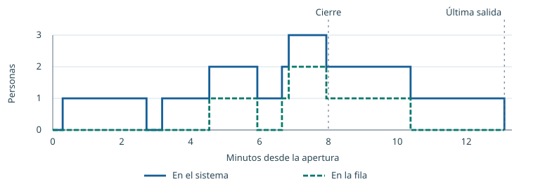
traza_sembrada.medidas.serie en la evidencia T02.La suma de esperas es 0+0+1,394163+3,732888+1,090379=6,217429 min. Con cinco atendidos, Wq=1,243486, W=3,716302, Lq=0,474402 y L=1,417805. Tiempo efectivo T=13,105833 y ocio 0,741753. La caja se ocupa 94,3403 %. Se comprobó por separado un caso de cuatro clientes con enteros que da Wq=3,25 y Lq=1,3. T02, trazas completas.
14. Teoría de colas y métricas
En un tramo homogéneo la notación de Kendall sería M/U/c, capacidad y fuente sin límite, con prioridad no expropiativa indicada aparte. Si se selecciona servicio exponencial, M/M/c solo describe las leyes de llegada y servicio durante un tramo; la disciplina y el horizonte siguen siendo los del simulador. En la publicación por tramos, la intensidad es dependiente del tiempo, a veces denotada Mt/G/c. No se estima estado estable y el tráfico ofrecido base es >1. Para Erlang C sirven parámetros sin prioridad, servicio exponencial y carga <1 en un experimento separado; su fórmula estacionaria no es un valor de referencia directo para el día que abre vacío y drena. B1, B2 y B8.
A, B, D, S, Q, V y C se miden en minutos desde apertura o en duración según el caso. N son clientes admitidos y atendidos, c las cajas y Tn los minutos acumulados con longitud n. Wq y W son min/cliente, Lq y L personas promedio temporal, U y P proporciones, O minutos ociosos por caja. El total de ocio incluye intervalos vacíos finales y el campo tiempoOcio de cada cliente cuenta solo tiempo libre inmediatamente anterior a asignarlo. La espera máxima es el mayor Q de esa réplica; las longitudes máximas, el mayor n con duración positiva. Espera por prioridad promedia Q de ese grupo; una réplica sin miembros queda ausente para ese indicador. La tabla cliente a cliente incluye cliente, prioridad, caja, uniformes de llegada y servicio, intervalo entre llegadas, hora de llegada, inicio, fin, espera, atención, tiempo total y personas al llegar. La salida incluye además sumas temporales y probabilidades acumulables. Cálculo de medidas.
La ley de Little tiene una identidad exacta para esta trayectoria completa: ∫L(t)dt=ΣVi porque cada estancia contribuye uno durante su duración dentro de [0,T]. Dividir por T da L=(N/T)W, y de modo análogo Lq=(N/T)Wq, sin hipótesis de equilibrio. Con T=10 y N=4 en la traza de enteros, 0,4×5,75=2,30 y 0,4×3,25=1,30. No sustituir N/T por la tasa nominal de puerta ni multiplicar promedios separados de réplicas. Anexo A.6 · B8.
Clientes pendientes después del drenaje igual a cero por construcción en el motor propio. El número pendiente al cierre y el porcentaje de clientes que esperan se pueden derivar de la traza, pero la vista no los reporta como métricas agregadas. Con cero llegadas se aborta; con un cliente Wq=0 si el sistema abre vacío. Los pocos grados de libertad en resúmenes, coincidencias exactas, prioridades extremas y cierres se revisan en el anexo de pruebas. DNI para los dos indicadores agregados y IV para derivación a partir de registros y borde de una sola atención. T02, T03, T17.
15. Inventario e interpretación de gráficas
Las fichas G1–G12 cubren las opciones de graficas.js y la representación 3D. En las gráficas de barras, cada dato en las tablas proviene del JSON indicado. Las líneas de referencia son parámetros o cantidades calculadas, según la ficha. Ajustes modifica rejilla, valores sobre barras y animaciones. Pasa el cursor para inspeccionar puntos. El estilo suavizado de la línea temporal es cosmético y puede sugerir cambios entre eventos que el estado del sistema no tuvo. Funciones de gráficas.
| Gráfica y ubicación | Pregunta, tipo y ejes | Fuente y cálculo de marcas | Interpretación y límites |
|---|---|---|---|
| G1. Intervalos observados contra Poisson. Llegadas y resultado por jornada | ¿Qué clases concentran conteos? Barras dobles. X personas por intervalo agrupadas; Y número de intervalos | opcionPoisson, pruebaChiCuadradaPoisson. O y E de la Ecuación 4, incluyendo ≥ última clase | Intervalos, no personas acumuladas. Conserva total N. Clases de ancho desigual y cola abierta; no es densidad. |
| G2. Llegadas por intervalo y promedios móviles. Paso 1 | ¿Cómo varían los conteos? Barras y dos líneas. X inicio de toma, Y personas/toma | opcionPromediosMoviles, analizarLlegadas. Barra xt coloreada por franja, PMS y PMP según la Ecuación 10, ventana del formulario | Los primeros k−1 puntos no tienen promedio. Horas sin observar carecen de barra. No estima esperas ni tasas futuras por sí misma. |
| G3. Personas en el banco y en la fila. Detalle por jornada | ¿Cuándo se acumula la fila? Serie por escalones. X hora, Y personas | opcionFilaEnElTiempo; pares [t,Ns] y [t,Nq] de corrida1.medidas.serie | Una sola réplica y estados ordenados; la diferencia son personas en atención. Movimientos redondeados en texto y posibles timestamps iguales. |
| G4. Espera promedio en cada corrida. Detalle | ¿Cuánto varían las medias diarias? Barras, X índice, Y min | opcionEsperaPorCorrida. Barra Wq de cada réplica aceptada, línea media y meta; área horizontal IC del 95 % | El área estima media entre réplicas; las barras pueden quedar fuera por variabilidad. No es un rango de esperas individuales. |
| G5. Fracción del tiempo con n personas. Detalle | ¿Qué ocupación de fila y sistema es habitual en el modelo? Dos líneas/áreas. X personas, Y % de tiempo | opcionLongitudes; promedia Tn/T entre réplicas, con cero si no se visitó el estado | Distribución por duración, no distribución vista por quien llega. La tabla muestra masa y acumulada. |
| G6. Ocupación de cada caja. Detalle | ¿Qué proporción del horizonte atiende cada caja? Barras. X caja, Y % de tiempo | opcionOcupacionPorCaja. Media de Uj entre réplicas; banda de ocupación elegida en ajustes | La banda es meta, no IC. El desempate de asignación puede cambiar diferencias entre cajas. |
| G7. Acumulada de aleatorios de corrida 1. Sección KS | ¿Dónde se separan de U(0,1)? Dos escalones y diagonal. X uniforme adimensional, Y F | opcionAcumuladaKS ordena R; i/n tras salto, diagonal y dos líneas punteadas límite. Umbrales de primera réplica aceptada | D evalúa ambos lados. Los trazos se recortan con extremos que no conservan la pendiente unitaria, H10. Leer D de la tabla. |
| G8. D relativo al valor crítico. Sección KS | ¿Qué intentos fueron descartados? Dispersión. X índice objetivo de corrida, Y D/crítico | opcionDPorCorrida. Dos marcas de aceptados, triángulo para máximo de dos razones del intento fallido. Línea y=1 | Triángulos pueden compartir X y superponerse por reintentos. Razón ≥1 implica rechazo. La escala no es valor p. |
| G9. Espera según número de cajas. Veredicto | ¿Qué capacidad pasa la meta? Puntos unidos, X número de cajas, Y min Wq | opcionCurvaCajas. Cada jornada usa la media del escenario c; regla todas las jornadas ≤ meta | Puntos de escenarios hasta primera solución y una caja más cuando cabe; carece de IC de diferencias. IC estrecho o semilla fija no garantiza decisión robusta. |
| G10. Ocupación según número de cajas. Veredicto | ¿Cómo varía la carga de cajas? Puntos unidos, X número de cajas, Y % ocupado | Misma función y corridas que G9, usa Ū y dos líneas de metas de ocupación | Describe la ocupación de casos explorados. El algoritmo no impone esta banda. |
| G11. Llegadas por intervalo, comparación. Establecimiento | ¿Cómo se distribuye el conteo en dos fechas? Barras agrupadas y línea de diamantes. X enteros, Y % de intervalos | opcionComparacionDias, histogramaDeLlegadas, compararDias. Dos escenarios por fecha/categoría y muestra de estudio opcional | Clases unitarias 0…máximo común. Frecuencias normalizadas por serie. Series de fechas iguales en horario y tipo son idénticas. Sin masas si N=0. |
| G12. Banco animado. Detalle | ¿Quién llega, espera, se atiende y sale? Animación 3D de la primera réplica | BancoAnimado.vue, corrida1.clientes. Posiciones animadas según reloj, ruta, servidores y clases | La geometría ilustra eventos. Los tres minutos de desplazamiento visual tras acabar y el límite de 140 ubicaciones son efectos de presentación; no cambian los eventos ni limitan la capacidad simulada. |

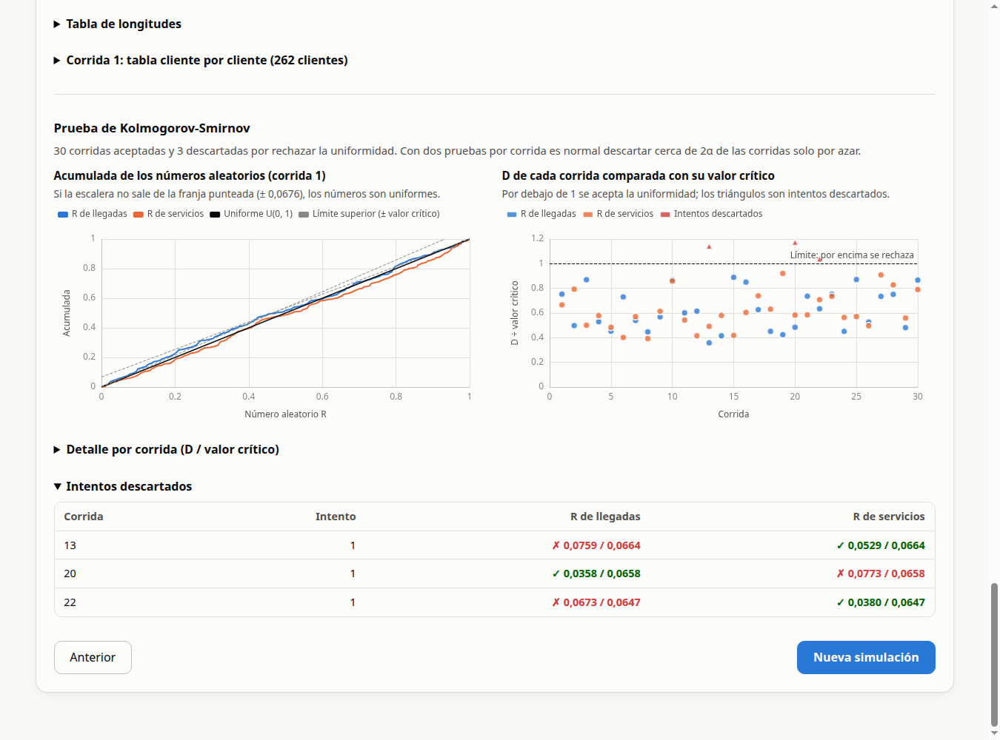

En un histograma para una variable continua suele asignarse ancho de clase y, al comparar clases de ancho diferente, la densidad de frecuencia es f/(N·ancho) para que el área sea masa. G11 es una representación discreta de masas unitarias con barras categóricas. G1 agrupa varias clases para Pearson y muestra frecuencia absoluta. Con el caso reproducido, G11 tiene medias 5,0470 y 6,5568 personas/5 min, frente a 4,9074 observadas. Las 2.340 tomas se obtienen como (48+30) intervalos ×30 corridas. El código omite la última toma incompleta de una jornada y cuenta ceros. La ventana de observación de mañana es más corta y junto con la tarde induce una mezcla distinta de exposiciones respecto a las curvas simuladas. Las barras ilustran la distribución bajo parámetros del estudio. Una prueba inferencial entre días o políticas necesitaría datos comparables e independencia a nivel de día. Masas, clases y conteos reales.
16. Diseño experimental y sensibilidad
Yr es la medida de una réplica aceptada, R las réplicas disponibles, s la dispersión entre ellas y EE el error estándar de su media. Si Y es Wq, Ȳ, s y EE se expresan en minutos. La t es adimensional. La distribución exacta requiere réplicas iid normales; con suficiente R la aproximación se apoya en el límite central. Tres valores ilustrativos 10,12,14 producen Ȳ=12, s=2, EE=1,1547 y margen 4,9683 con t2=4,30265 (IC 7,0317–16,9683). Con R=1 la función devuelve límites iguales a la observación, que deben interpretarse como ausencia de estimación de error. Con R=0 se omite el indicador en las rutas pertinentes. Los percentiles de una espera individual son otro estimando. Anexo A.7 · B1 §6.1 y B10.
La apertura vacía forma parte de la simulación terminante. Calentamiento, lotes estacionarios y estimación regenerativa no se aplican. Las réplicas consumen bloques sucesivos del único estado, de longitud dependiente del resultado; el modelo las trata como réplicas comparables. El rechazo por KS condicionaliza la población de salidas. La aplicación usa treinta réplicas por defecto; el levantamiento no acredita un cálculo previo de potencia o una precisión requerida que justifique ese número. Se puede estimar un R piloto para semiancho ε mediante (t·s/ε)² y ejecutar un tamaño fijado, con confirmación independiente si se impone regla adaptativa. Precisión relativa = semiancho/|Ȳ| si la media se separa de cero. B1 §§1.3.3–1.3.5 y 6.2; B10.
| Escenario y jornada | Wq (min) | W (min) | Lq | L | Ocupación | Salida media |
|---|---|---|---|---|---|---|
| Regular mañana | 209,97 | 222,93 | 79,70 | 84,62 | 98,39 % | 19:21 |
| Regular tarde | 100,11 | 113,19 | 37,05 | 41,89 | 96,89 % | 20:13 |
| Quincena mañana | 308,42 | 321,42 | 117,21 | 122,15 | 98,86 % | 22:36 |
| Quincena tarde | 150,97 | 163,80 | 57,54 | 62,42 | 97,69 % | 21:54 |
La mañana regular tiene IC Wq [200,71; 219,22]. Al cambiar máximo uniforme manteniendo mínimo 1, Wq de la mañana para máximos 25, 15, 10, 8, 7 y 6 fue 209,97; 85,00; 24,15; 5,87; 2,05; 0,77 min al simular las dos jornadas. El levantamiento muestra una sensibilidad de la mañana con resultados distintos, coherente con una corrida de diseño y consumo de uniformes diferente; no se dispone de todos los comandos originales. La búsqueda con meta Wq≤10 encuentra 14 cajas regular y 18 quincena en esta configuración. Los valores describen escenarios supuestos, no dotación observada ni recomendación de operación validada. El modelo acepta rangos diferentes de servicio y ratios de demanda, y publicar intervalos distintos cambia dónde clasifica y agrupa. La comparación factorial entre jornadas, servicio, horarios y demanda queda recomendada en vez de presumirse ejecutada. T07–T08.
17. Verificación computacional
Verificación comprueba si las reglas del modelo se ejecutan como se especificaron. Se ejecutó python -m unittest -v: 104 pruebas, todas satisfactorias. En el núcleo cubren tasa, tiempo, empates, prioridad, cierre, casos a mano, probabilidades, tabla de longitudes, KS frente a SciPy, Poisson, Ciw y capacidad. La suite de planificación añade cálculo de quincena, binning, siembra, clasificación, continuidad y endpoints. El front compiló y se navegó en Chrome con datos aislados. El registro conserva nombres de pruebas y el anexo describe condiciones, valores y tolerancias. IV. Registro completo · Anexo de pruebas.
En la traza con semilla 1, los cinco admitidos terminan y la cantidad en servicio es nunca mayor que una. ∫L y ∫Lq reconstruidas desde eventos coinciden con sumas de V y Q. La traza determinista con tiempos enteros separa la prueba de cola del generador. Con n=4, el KS sobre [0,14; 0,30; 0,44; 0,80] devuelve D=0,31 y SciPy exacto coincide. Un caso M/M/c estacionario no acredita estos horizontes. La identidad de Little finita y la conservación de personas sí son referencias analíticas del mismo caso. Los extremos fallidos H05–H06 se reproducen en el anexo, aunque la suite existente sea verde.
18. Validación, incertidumbre y decisión científica
Validación conceptual pregunta si entidades, límites y disciplina describen la operación. Validación de datos verifica procedencia, precisión y representatividad. Validación operacional compara salidas con el banco en el horizonte y decisiones previstas. La comparación con otro motor verifica coherencia bajo hipótesis compartidas. Ciw simula dos flujos exponenciales por categoría, cierre, prioridad y servicio equivalente. Su wrapper ejecuta hasta 10⁷ min, retiene registros completados y vuelve a intentar una jornada vacía hasta llenar el número de mediciones. El código compara L, Lq, W, Wq, Wq prioritario, Wq demás y utilización con Welch bilateral; requiere dos muestras de al menos dos medidas, no ajusta multiplicidad y reutiliza calcularMedidas. Ciw se aplica al asistente base, no al calendario por tramos. Implementación · B7, B9 y B11.
Welch usa ν de Satterthwaite, varianzas distintas y observaciones independientes dentro y entre muestras como aproximación. H₀ igualdad de medias; H₁ diferencia en cualquiera de las direcciones. Implementa coinciden = p > α. En T09 el p para Wq fue 0,29785 en mañana y 0,32955 en tarde con la semilla 12345. El resultado no demuestra equivalencia. La comparación aplica KS a réplicas propias y no a Ciw, comparte medidas y usa partes del mismo generador; esto limita la fuerza de la corroboración. Casos constantes o 100 % prioritarios requieren tratamiento explícito. Derivación y ejemplo A.7 · H06.
| Fuente | Estado de cuantificación | Diseño de validación propuesto |
|---|---|---|
| Muestreo de llegadas | Con un día se describe variación intradía. No se puede estimar variación entre días o estacionalidad | Medir días completos por día semanal, quincena y tipo de cierre; registrar tiempos de entrada a fila. |
| Parámetros de servicio y proporciones | Sensibilidad comprobada, sin estimadores históricos | Muestrear inicio y fin de atención, prioridades y uso de caja; calibrar por franja y modalidad con intervalos. |
| Variabilidad inherente y error Monte Carlo | Con parámetros fijos, réplicas y t aproximada cuantifican error de la media condicionada | Separar cuantiles de espera individual, IC de media y variación entre días. Repetir con lotes de semillas. |
| Estructura y reglas | Desacuerdo entre drenaje de mañana e inicio vacío de tarde en caso base | Registrar cola remanente, políticas reales y cierres. Validar contra clientes de fechas nuevas, con métricas por segmento y tolerancia fijada antes. |
| Implementación y numérica | Pruebas de traza y casos límite, H05–H07 y H13 | Agregar regresiones y tratar entradas de tasa cero y no finitas. Comparar con tolerancias declaradas. |
Un plan operativo debe distinguir conteos a la puerta, entradas a fila y tiempos en atención, con consentimiento y datos mínimos del cliente si alguna fuente se recopila. Fijar muestra por niveles relevantes, conservar un conjunto temporal de prueba y comparar en él error absoluto y calibración de intervalos predictivos por franja. Estimar si hubo mejora frente a una referencia empírica simple (mediana histórica por franja y tipo). Los resultados actuales sostienen una herramienta didáctica de escenarios. R para el plan; NV para validación predictiva realizada. B9.
19. Planifica tu visita y comparación de fechas
api.py, calendario.py, planificacion.py.Publicar calcula cada horario distinto registrado en semanas y excepciones, dos veces, regular y quincena incluso si esa combinación aún no se seleccionó. La llave es tipo|inicio-fin,…, ordena jornadas, y su semilla textual combina la raíz con la llave. El factor del asistente no se aplica dos veces: la publicación toma p de caja y factor quincena propio según tipo; usa armarJornadas para servicio. La selección de perfil consulta el inicio de la franja operativa y asigna servicio de la jornada con más coincidencias de franjas o la primera como respaldo. La media de tasa en el escenario pondera por minutos. IV para funcionalidad, SM para respaldos sin observación. Planificación.
La espera Wq por franja se calcula con los clientes que llegan en ella, incluso si les atienden en otra. Bordes internos son [desde,hasta); el cierre final incluye su igualdad. Cada réplica con al menos un cliente aporta su propia media de Wq, servicio y W; réplicas vacías en esa franja se excluyen de esas tres medias. El número esperado de clientes por franja sí incluye ceros. Wq es nulo si ninguna réplica tiene clientes. La interfaz de cliente muestra media, la recomendación por menor Wq y hora, y un promedio simple de medias de servicio entre franjas con datos. Las franjas «parecidas» cruzan sus IC marginales del 95 % con el de la mínima, sin contraste de diferencias pareadas. Para una recomendación con incertidumbre se pueden estimar diferencias por réplica y aplicar intervalos simultáneos, y presentar percentiles de espera individual. H07 y H09.

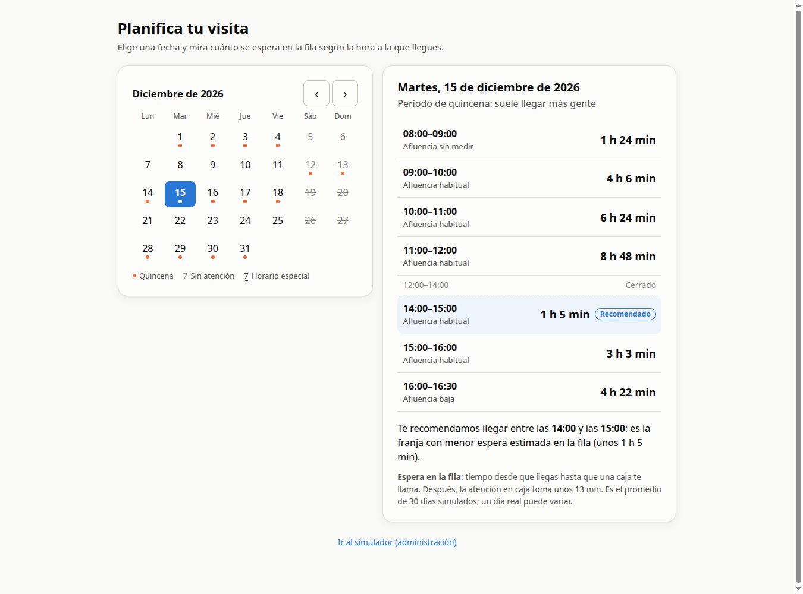
Con 120 min, el calendario genera 08:00–10:00, 10:00–12:00, 14:00–16:00 y 16:00–16:30. Un solo bloque de 14:00–16:30 junto con los de dos horas de mañana requeriría cortes configurables por jornada. La automatización de quincena se constató, pero consultar dos fechas con igual horario y tipo devuelve las mismas esperas. La fecha selecciona una proyección condicionada, no ajusta un pronóstico particular basado en varias fechas reales. El dato necesario para ese pronóstico sería una historia fechada y validada de llegadas, servicio, cajas efectivas y esperas que permita distinguir los días fuera de muestra. DNI para cortes personalizados y pronóstico diario calibrado. Matriz D.2.
20. Arquitectura, dependencias e interfaces
docker-compose.yml, front/nginx.conf, api.py y planificacion.py.Backend: Python 3.12.3 en el entorno auditado, Dockerfile Python 3.13-slim. FastAPI 0.162.4 y Pydantic 2.14.3 validan/serializan, Uvicorn 0.54.0 sirve, SciPy 1.18.1 hace cuantiles y Welch, Ciw 3.2.7 es motor independiente. El frente usa Vue 3, Vite 8, ECharts 6, Three.js 0.187 y Tweakpane 4, versiones resueltas por package-lock.json. Inter y Atkinson están empaquetadas. Vite inicia con main.js, App.vue decide ruta hash y pasos, estado.js maneja valores reactivos y api.js solicitudes. Grafica.vue administra ciclo de vida de ECharts; graficas.js adapta cada serie y formato.js redondea etiquetas. Three.js genera la animación de registros recibidos. El archivo visualizaciones/calendario-de-visitas.html es un prototipo independiente con datos de ejemplo. Las figuras 19–20 son capturas del componente Vue PlanificaVisita.vue conectado a la API real.
| Método y ruta | Entrada y salida | Operación interna y errores relevantes |
|---|---|---|
| GET /api/entrada-por-defecto | Configuración de Entrada | Valores de fábrica del estudio. |
| POST /api/poisson | Conteos, α → clases, X² y dictamen | pruebaChiCuadradaPoisson. Cero total 422, hueco de validación negativa H12. |
| POST /api/analisis-llegadas | Entrada, largo y ventana → series y franjas | analizarLlegadas. Conteos que no caben generan 422. |
| POST /api/simular | Entrada → semilla, versión, KS, resultados y traza por jornada | simular; 409 por límite de KS, 422 por jornada vacía o entrada. |
| POST /api/cajas-necesarias | Entrada y meta → recomendación, curva y semilla | buscarCajasNecesarias, máximo 30 cajas y una adicional al detectar solución si cabe. |
| GET y PUT /api/establecimiento | Lee estado o recibe zona/horario/excepciones/parámetros y publica | configuracionActual, publicarYGuardar. Validación de IANA, franjas y jornadas; propagación H05. |
| GET /api/calendario/{anio}/{mes} | 1900–2999, mes 1–12 → días, tipo, horario y hoy | diasDelMes; mes o año inválido 422. |
| GET /api/visita/{fecha} | Fecha ISO → espera, recomendación y alternativa si cerrada | estimacionesVigentes, consultarFecha. Puede recalcular ante caché ausente o desactualizada. |
| GET /api/comparar-dias | Fecha A y B ISO y categoría → distribuciones relativas y observada opcional | compararDias; fecha idéntica 422. Puede recalcular si falta el lote. |
Las pruebas estadísticas se implementan en pruebaKS.py, pruebaPoisson.py, analisisLlegadas.py y medidas.py. iniciador.py programa llegadas, asigna caja y deriva salidas. La comparación se ejecuta mediante compararConCiw en validacionCiw.py. El candado por proceso serializa rutas que usan random y la lista global de aceptadas, que se limpia en finally. No serializa múltiples procesos. Configuración y estimaciones se reemplazan atómicamente por archivo, con una huella SHA-256 truncada a 16 hexadecimales. Los resultados ordinarios quedan en memoria del front hasta nueva simulación o recarga. No hay base de datos o cuentas en esta revisión. H11.
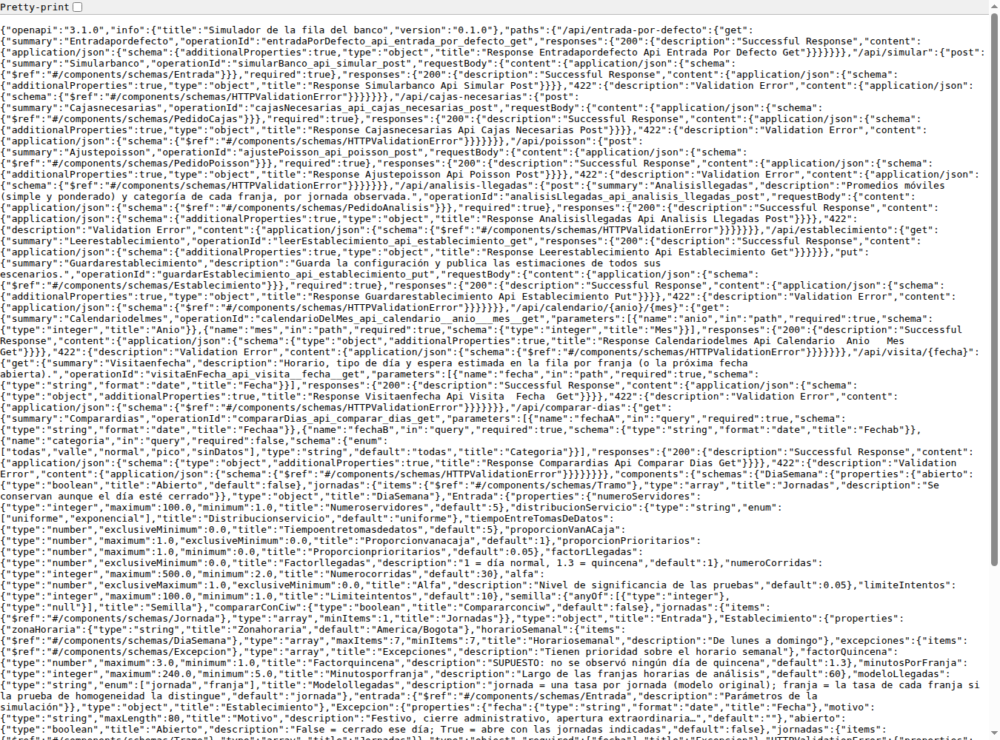
21. Justificación de decisiones y alternativas
| Problema | Método y criterio | Alternativas, ventajas y costo | Origen y evidencia |
|---|---|---|---|
| Representar conteos y cadencia | Poisson y exponencial con tasa media para una hora/jornada homogénea | Conteos sobredispersos, re-muestreo en bloques o proceso no homogéneo. Flexible si hay varios días, requiere datos. El modelo de franjas permite tasas a trozos. | Levantamiento §§1.2–1.4; B1 ejemplo 4.11; T04 y T10. |
| Servicio sin observaciones | Uniforme 1–25 por acuerdo del equipo. Media exponencial opcional para sensibilidad | Empírica, gamma, lognormal o mezcla por trámite; exige tiempos. Fijar 4–5 min solo para evitar colas sería ajuste a una expectativa, no estimación independiente. | Documentado en LEV §1.3e. T08. |
| Generar variables | MT de biblioteca y transformada inversa cerrada | Congruenciales son pedagógicos y reproducibles pero con geometría y período dependientes de parámetros. Inversa es simple y barata aquí. Rechazo o composición son útiles para otras familias. | LEV §1.4, B1 §§2 y 4, B3–B4. Funciona T02 y T11. |
| Bondad de ajuste | Pearson para conteos, KS para uniformes y homogeneidad Pearson para franjas | Bootstrap de todo el flujo de ajuste, prueba condicional multinomial, análisis de residuos. Mayor rigor con muestras pequeñas y calendarios de observación. Diagnósticos fuera del bucle de aceptación. | LEV §§1.3 y 1.6 y código posterior. T04–T06, H02–H04 y H08. |
| Reloj de cola | Modelo terminante y agenda implícita de cajas | Calendario explícito en montículo facilita turnos, abandono, interrupciones y cambios de servicio. Erlang C ayuda de control en submodelo estacionario. | Reconstrucción del código, B1 ejemplo 5.6 y problema 5.13. T02–T03. |
| Intervalo de conteo, tamaño y confianza | 5 min de la tabla; 30 réplicas y t al 95 % | Tomas más cortas mejoran resolución y pueden generar baja frecuencia. Tamaño basado en semiancho; más días para validez. Regeneración serviría a otro estimando de régimen estacionario. | Intervalo y predeterminada documentados; justificación empírica de elección NV. B1 §§1.3 y 6; T07–T08. |
| Capacidad y UX | Enumeración de cajas y mínimo Wq por franja; publicación por llave | Selección con error controlado, objetivo de costo o cuantiles, perfiles por fecha si existe historia; mayor latencia y costo de datos. La publicación evita simular repetidamente escenarios idénticos. | Reconstrucción técnica, T07–T14, H09–H11. |
El ejemplo 5.6 del libro trata camiones y un equipo de descarga que actúa como servidor. Usa tablas empíricas de llegadas, servicio y carga inicial. Evalúa costo de espera, horas extra y dotación a lo largo de 60 turnos. Es afín por la lógica de espera, no por la distribución de servicio o la cantidad de servidores. El problema 5.13 es un banco con cola única, tres cajeros, llegadas Poisson y servicio uniforme, con parámetros distintos del caso local. La sección 6.2 usa ciclos regenerativos en una cola de un servidor. El proyecto opera con réplicas terminantes y no usa ese estimador. Mapa de páginas verificadas.
22. Defensa académica
El banco de defensa presenta 100 preguntas agrupadas en 16 áreas. Cada ficha expone respuesta técnica, justificación matemática, evidencia del repositorio, referencia, objeción y respuesta. Los temas críticos incluyen soporte real de las recomendaciones, selección por KS, choque entre cierre y reinicio, uso de Ciw, tasas cero y comparación de días bajo una sola fuente. Banco de defensa.
23. Auditoría de cumplimiento y conclusiones
El simulador reproduce las métricas del modelo y la planificación con configuración de referencia. Las pruebas muestran que las estimaciones por fecha reutilizan escenarios y que la cola continúa dentro de cada jornada. Los casos límite reproducidos, la selección estadística de réplicas y la falta de datos históricos reducen la fuerza de las conclusiones. La concordancia numérica con Ciw bajo las condiciones ensayadas es evidencia de verificación cruzada. El contraste de un solo día y la ausencia de medición del servicio impiden acreditar validez operacional para dotación o visita real. Evaluación por dimensión · Informe priorizado.
Para validar la aplicación como apoyo al cliente se necesitan, en orden, datos fechados y tiempos de atención, reglas de continuidad verificadas, tratamiento inferencial de los tiempos y pruebas fuera de muestra. La corrección de fallos de implementación debe preceder a usar la publicación en escenarios extremos. R.
Bibliografía y mapa de fuentes
- B1. Coss Bu, Raúl. Simulación: un enfoque práctico. Limusa / Noriega Editores, fecha de edición no visible en la copia examinada. Copia local escaneada de 130 posiciones. Fecha de producción del PDF 2009, distinta del año editorial. Copia del entorno.
- B2. Caballero, Ricardo. Simulación Aplicada a la Logística. Lectura 3: Simulación Monte Carlo. Fecha editorial no indicada, archivo con metadatos 2024. Págs. PDF 2–4 sobre eventos; el ejemplo «peluquería Rizos» desarrolla traza y medidas con una caja; «Ejemplo 3» ilustra llegadas de barcazas y frecuencias. Referencia complementaria; el proyecto no implementa esas reglas. Apuntes locales.
- B3. Matsumoto, Makoto y Nishimura, Takuji (1998). Mersenne Twister: A 623-Dimensionally Equidistributed Uniform Pseudo-Random Number Generator. ACM TOMACS 8(1), 3–30. §§2–4, recurrencia y período. Artículo original.
- B4. Python Software Foundation. random, documentación de Python 3.12, y CPython v3.12.3,
Modules/_randommodule.c, funciones de estado, semilla y 53 bits. Documentación · Fuente versionada. - B5. Stephens, M. A. (1974). EDF Statistics for Goodness of Fit and Some Comparisons. JASA 69(347), 730–737. Estadísticos EDF y modificación numérica para KS. Artículo.
- B6. NIST/SEMATECH. e-Handbook of Statistical Methods, §§1.3.5.15–16; SciPy, kstest y chisquare, notas sobre hipótesis, calibración y grados de libertad. Pearson · KS · SciPy KS · SciPy Pearson.
- B7. Welch, B. L. (1947). The generalization of Student’s problem when several different population variances are involved. Biometrika 34(1–2), 28–35. Contraste de medias con varianzas diferentes. Artículo original.
- B8. Little, J. D. C. (1961). A Proof for the Queuing Formula L = λW. Operations Research 9(3), 383–387. Relación y condiciones de largo plazo; el anexo deriva por separado la identidad de trayectoria. Artículo original.
- B9. Sargent, R. G. (2013). Verification and validation of simulation models. Journal of Simulation 7(1), 12–24. Validez de datos, conceptual y operacional. Artículo.
- B10. Alexopoulos, Christos y Seila, Andrew F. (2001). Output Data Analysis for Simulations. Proceedings of the Winter Simulation Conference, §2, pp. 115–116. Réplicas de horizonte finito y precisión. Trabajo original.
- B11. Documentación del proyecto Ciw 3.2.7, guías de distribución, semilla y práctica de simulación. Fundamento de la comparación instrumental. Semillas · Distribuciones · Práctica.
- B12. Equipo del simulador, Levantamiento de requerimientos, Capítulo 1, README y archivos de la revisión local. §§1.1–1.9: supuestos, datos, diseño y experimentación, cotejados contra el código. El comentario
test_casosDelVideopermite identificar el criterio del tablero contrastado, pero no identifica título, autor, enlace ni minuto del video. Su contenido original queda NV. Levantamiento · Prueba del tablero · Verificación de fuentes.
| Secciones | Página impresa | Posición PDF, base 1 | Uso comprobado |
|---|---|---|---|
| Índice y §1.1–1.5 | 9–18 | 2–11 | Definiciones, etapas, estado inicial, tamaño y experimentación. |
| §2 y §2.1 | 19–21, 25–26 | 12–14, 18–19 | Uniformes y congruenciales mixto/multiplicativo; comparación con MT. |
| §3.1–3.7 | 32–48 | 24–40 | Fórmulas, ejemplos, Tabla 3.5 y diferencia del corte n>100. |
| §4.1–4.4 | 49–51, 54, 57, 61–62 | 41–43, 46, 49, 53–54 | Transformadas, familias alternativas y relación Poisson–exponencial. |
| Ejemplo 5.6 y problema 5.13 | 90–91, 93–98 y 103 | 79–80, 81–86 y 91 | Turno, equipo, simulación manual y dotación. Banco al final de p. 103. La p. 89 indicada por el índice no se observó en esa transición de la copia. |
| §6.1–6.2 | 107–114, 117 | 94–101, 102 | IC, autocorrelación de esperas y ciclos regenerativos. |
Listado de símbolos
| Símbolo | Significado | Unidad |
|---|---|---|
| U o R | Uniforme generado. En ecuación 14, R designa cantidad de réplicas | Adimensional o cantidad, según contexto |
| Δ, xt, n | Duración de toma, conteo, tamaño de muestra | min, personas por toma, observaciones |
| λ̂, r, μ, ρ | Tasa por toma, tasa por minuto, capacidad media por caja, carga ofrecida | personas/toma, personas/min, servicio/caja/unidad, proporción |
| Ai, Bi, Di, Si, Qi, Vi | Llegada, inicio, salida, servicio, espera y permanencia del cliente i | min o min desde apertura |
| c, C, T, N | Cajas, cierre de admisión, horizonte de observación, admitidos atendidos | cajas, min, min, personas |
| L, Lq, W, Wq | Promedio temporal en sistema/cola y promedio por cliente de estancia/espera | personas y min |
| α, ν, Fn, D, X² | Nivel de significancia, grados de libertad, acumulada empírica, distancia KS, Pearson | Adimensional |
| Oj, Ej, Nj | Frecuencia observada y esperada, cantidad de entradas/observaciones según prueba | Intervalos, personas o eventos según clase |
Glosario
- Afluencia
- Intensidad de entrada de personas. «Afluencia sin medir» indica ausencia de observación temporal.
- Censura por horizonte
- El motor descarta la candidata de llegada que cae después del cierre o fuera de su tramo, y el uniforme no pasa al diagnóstico.
- Escenario
- Conjunto de parámetros y reglas para una proyección. Varias fechas pueden apuntar a uno.
- Hipótesis nula
- Modelo de referencia del contraste. No rechazar indica evidencia insuficiente en contra bajo sus supuestos.
- Intervalo de confianza
- Procedimiento para la media cuyo nivel es cobertura repetida bajo condiciones de muestreo. Un intervalo predictivo describe un valor futuro.
- Prioridad no expropiativa
- Preferencia al asignar servicio libre; no interrumpe servicio en curso.
- Réplica o corrida
- Una realización del modelo con sus eventos. «Corridas» también denomina, en el libro, un contraste de orden completamente distinto.
- Verificación y validación
- Verificación confronta código y especificación. Validación confronta el modelo con su propósito y el sistema.
Anexos y entregables relacionados · Matemáticas · Pruebas · Cumplimiento · Defensa · Hallazgos.